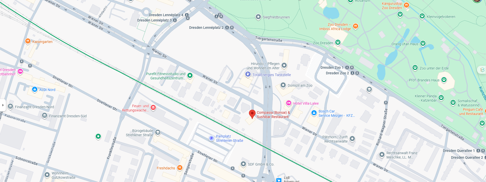

Mitten im Herzen Dresdens laden wir Sie ein, die Vielfalt der asiatischen Küche in einem stilvollen und entspannten Ambiente zu erleben. Im Bonsai verbinden wir traditionelle Rezepte mit modernen Einflüssen und bereiten jedes Gericht mit frischen Zutaten, Sorgfalt und Leidenschaft zu.
Ob kunstvoll zubereitetes Sushi, aromatische Wok-Gerichte oder weitere asiatische Spezialitäten – bei uns stehen Qualität, Authentizität und Genuss im Mittelpunkt. Unser freundliches Team sorgt dafür, dass Sie sich vom ersten Moment an willkommen fühlen.
Genießen Sie gemeinsam mit Familie, Freunden oder Kollegen eine kulinarische Reise durch Asien. Abgerundet wird Ihr Besuch durch eine Auswahl an erfrischenden Getränken, ausgewählten Weinen, Bier, Tee und Kaffeespezialitäten – für ein rundum gelungenes Geschmackserlebnis.

Das Restaurant Bonsai befindet sich in zentraler Lage und ist sowohl mit öffentlichen Verkehrsmitteln als auch mit dem Auto bequem zu erreichen.
Wir freuen uns darauf, Sie bei uns begrüßen zu dürfen.